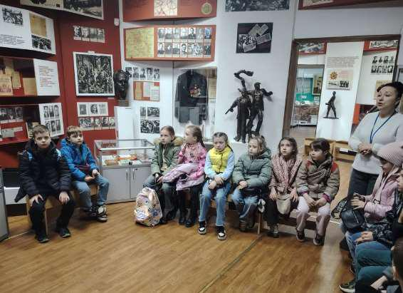
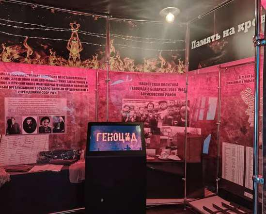
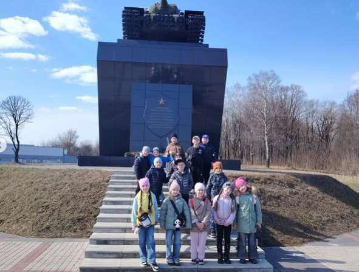

ЭКСКУРСИЯ В КРАЕВЕДЧЕСКИЙ МУЗЕЙ
Весенние каникулы для учащихся 1 «В» и 1 «Г» классов прошли не только весело, но и познавательно. 24 марта первоклашки посетили Государственное учреждение «Борисовский объединенный музей», где для ребят распахнула свои двери история родного города.

Юные исследователи с большим интересом знакомились с тем, как жили люди раньше, слушали рассказы о культуре и традициях. Особое внимание детей привлекли достопримечательности нашего города — многие из них ребята теперь узнают на прогулках с родителями.
Важной частью экскурсии стал рассказ о Великой Отечественной войне. Первоклассники узнали о героическом прошлом нашей страны, о том, как важно помнить подвиг предков. Глубокое впечатление на детей произвело посещение памятника — легендарного танка экипажа Павла Рака. Ребята с гордостью и трепетом слушали о мужестве героевтанкистов, защищавших нашу землю.

